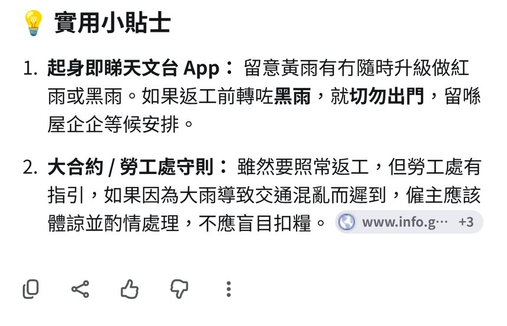

跟 Reel 用 google.com.hk 免費搜尋「AI 模式」：喺搜尋結果頂撳「AI 模式」，打一句黃雨返工準備問題，睇出門裝備／交通／小貼士清單再撳複製。附真實畫面截圖、可抄 Prompt，同天氣／交通／返工安排要以官方為準嘅提醒。
Reel 一句講晒：黃雨返工前要執乜、點搭車，Google AI 模式一頁列晒
你會學到
- 點樣喺 Google 搜尋結果頂撳「AI 模式」分頁
- 用一句廣東話問題叫佢列黃雨返工準備清單
- 點樣撳複製貼去 WhatsApp／備忘錄，同對返天文台、運輸署、公司及勞工處指引
開始前準備
- 手機或電腦開 google.com.hk（示範用香港搜尋，介面繁體中文）
- 想問嘅天氣／返工場景（例：聽日黃雨返工）
- 記住：AI 答案只供參考，正式安排要以官方同公司指引為準
3 步做法
撳 AI 模式：喺 Google 搜尋打問題，搜尋結果頂第一個分頁「AI 模式」撳落去。
示範用 google.com.hk：結果頂會見到「AI 模式」「全部」「新聞」等分頁；「AI 模式」通常排最左。
亦可以去 google.com/ai 直接入 AI 模式（Google 官方說明）。
真實畫面（2026-10-05 自行截圖）：搜尋結果頂第一個分頁就係「AI 模式」。 打問題撳傳送：打「聽日朝早落黃雨，返工前要準備啲乜？交通點安排？用廣東話列清單」，撳藍色箭咀傳送。
問題可以改成你實際要面對嘅情況（紅雨、黑雨、八號波），但同樣要叫佢列清單、用廣東話。
輸入框右邊通常有語音咪、Lens／相機同藍色箭咀傳送掣；示範問題冇個人資料。
真實畫面（2026-10-05 自行截圖）：問題打好，撳藍色箭咀傳送。 睇清單撳複製：出門裝備、交通安排、小貼士一頁列晒，撳答案下面最左邊嘅複製掣，貼去 WhatsApp／備忘錄。
示範答案會有清單同「實用小貼士」；來源卡可能連去政府網站，但內容仍屬 AI 整理。
轉發或照做之前，天氣以天文台、交通以運輸署／鐵路公司、返工安排以公司及勞工處《颱風及暴雨警告下工作守則》為準——唔好當 AI 一句「照常返工」做事實。

真實畫面（2026-10-05 自行截圖）：清單／小貼士下面，最左邊係複製掣。
可抄 Prompt
Reel 用嘅一句（黃雨返工）
聽日朝早落黃雨，返工前要準備啲乜？交通點安排？用廣東話列清單
改成紅雨／黑雨
聽日朝早掛紅雨／黑雨警告，返工前要準備啲乜？交通同出勤點安排？用廣東話列清單，每點簡短
只要出門裝備
聽日朝早落黃雨，返工出門前要執啲乜？用廣東話列 Check-list，唔使交通同返工政策
常見錯誤／注意事項
- 當官方天氣／出勤指示：AI 答案只供參考；天氣睇天文台，交通睇運輸署／鐵路公司，返工安排睇公司同勞工處指引。
- 照抄「照常返工」：AI 小貼士可能寫咗類似句子，唔等於你公司政策，亦唔係勞工處正式通知。
- 唔對來源就轉發：有來源卡都要自己打開核對；AI 可能睇漏或者寫錯。
- 問得太闊冇場景：講明黃雨／紅雨、返工定返學、屋企定辦公室，清單先有用。
香港用戶留意
Google 官方說明頁（2026-10-05 查）寫明 AI Mode 支援地區包括 Hong Kong，支援語言包括 Chinese (Traditional)，即香港＋繁體中文已支援。個別進階功能（例如 Gemini 3 Pro in AI Mode）可能只限英文／訂閱，以你畫面為準。
官方說明
- Get AI-powered responses with AI Mode in Google Search（Google Search Help）
2026-10-05 核實：AI Mode 支援地區包括 Hong Kong；支援語言包括 Chinese (Traditional)；說明點樣喺搜尋結果撳 AI Mode、用 Ask anything 問問題 - 颱風及暴雨警告下工作守則（勞工處）
返工／出勤安排以公司同勞工處指引為準（警戒上下文，唔係 AI 模式功能說明） - 香港天文台（天氣警告）
天氣警告以天文台為準（警戒上下文）
（以上連結當日逐條打開核對；介面同額度可能更新，以官方為準）
原帖
呢則 Reel 喺 IG @rabithead1881 主頁。